| Scene | Before (legacy chunk) | Migrated (raw) | Retuned (applied) / proposed (raw) | Final, denoised (showcases) | Mean Y before | Mean Y migrated | Mean Y retuned | Change | Measured cause |
|---|---|---|---|---|---|---|---|---|---|
FeatureBased/Animation/translucent_bunny.RISEscene | 0.12875 ±0.00022 n=3 | 0.027995 ±3.4e-05 n=3 | 0.12877 ±0.00026 n=3 | +0.0% | The iridescent painter is bound to BOTH ref and tau of the bunny's translucent_material. translucent_material has no thin film, so the tool uses the painter's projected-area mean colour (purple, w 0.21). Under the legacy painter the transmitted light mostly took the pale blue/white end (the painter is evaluated with each path's own ray direction), so the bunny was a pearly white-blue. Retune: OWNER RULING 2026-10-10 APPLIED: the deprecated (not frozen) iridescent_painter is KEPT on this showcase (translucent_material has no thin-film model); the tool skips its iridescent family (KEEP list). The scene is the pre-B2 scene plus a comment, so the final column is the legacy look: 0.1288 vs 0.1288 (+0.0%). | ||||
FeatureBased/BDPT/bdpt_cloister.RISEscene | 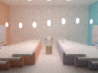 | 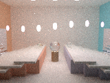 | – | 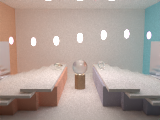 | 0.573 ±9e-05 n=3 | 0.57099 ±0.00031 n=3 | – | -0.4% | Material swap only (energy-bounded GGX / coated replacement); small effect on the whole image. |
FeatureBased/Combined/cloud_showcase.RISEscene | 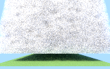 | 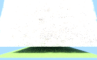 | 1.2726 ±0.00019 n=3 | 0.75578 ±0.0014 n=3 | 1.2729 ±0.0019 n=3 | +0.0% | The ambient_light lit EVERY scattering point inside the cloud unshadowed (a constant fill), so the legacy cloud was a near-saturated white. The uniform environment is occluded by the cloud itself, so the interior goes grey (measured: sun x2 restores the mean exactly). Retune: APPLIED: sun power 12 -> 24 (legacy-fudge cause, B1 precedent); mean back within 0.1%. Re-measured after the review fix that folds the ambient term into a NEW painter (pnt_sky_with_ambient; pnt_sky also feeds the sky_mat luminaire, which the first fold had brightened ~30%): 1.273 (+0.0%). | ||
FeatureBased/Combined/diamond_teapot_pour.RISEscene | 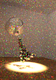 | 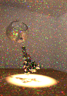 | – | 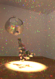 | 0.43533 ±0.0058 n=3 | 0.42886 ±0.0068 n=3 | – | -1.5% | Material swap only (energy-bounded GGX / coated replacement); small effect on the whole image. |
FeatureBased/Combined/glass_pavilion.RISEscene | 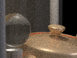 | 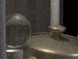 | 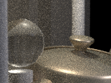 | 0.12825 ±0.0071 n=3 | 0.07623 ±0.00028 n=3 | 0.12815 ±0.00034 n=3 | -0.1% noisy | Isolated by migrating one material at a time (3 salts each): bronze only 0.0801 (-37.5%), floor only 0.1118 (-12.8%). The frozen cooktorrance_material adds its diffuse UNcoupled to the conductor lobe: a white-furnace sphere of this bronze reads RGB 1.18 / 0.86 / 0.55 (energy gain) against 0.66 / 0.56 / 0.42 for ggx_material; polished_material keeps its substrate albedo under the coat (furnace: 0.5 substrate reads 0.526 polished vs 0.327 coated). Retune: APPLIED: both omni powers x1.682 (5.6 / 9.3 -> 9.42 / 15.6); legacy-bias cause; mean back within 0.1%. Note this partly reverses the slice-B1 retune of the same lights. | |
FeatureBased/Combined/pavilion_colonnade.RISEscene | 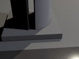 | 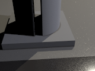 | 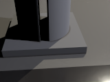 | 0.097485 ±4.5e-05 n=3 | 0.085062 ±7.7e-05 n=3 | 0.097483 ±8.5e-05 n=3 | -0.0% | polished_material floor -> coated_material. polished_material keeps its full substrate albedo under the coat (its substrate term is renormalised by the mean transmittance); coated_material loses the light trapped by internal reflection (white furnace, 0.5 substrate: 0.526 polished vs 0.327 coated). Retune: APPLIED: omni powers x1.146 (15 / 25 -> 17.2 / 28.7); mean back within 0.1%. | |
FeatureBased/Combined/planetary_survey.RISEscene | 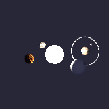 | – | 1.2822 ±0.001 n=3 | 1.2831 ±0.0012 n=3 | – | +0.1% | Material swap only (energy-bounded GGX / coated replacement); small effect on the whole image. | ||
FeatureBased/Combined/sculptors_studio.RISEscene | 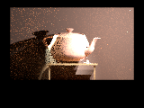 | – | 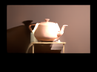 | 0.1752 ±0.0011 n=3 | 0.17411 ±0.00084 n=3 | – | -0.6% | Material swap only (energy-bounded GGX / coated replacement); small effect on the whole image. | |
FeatureBased/Combined/showroom.RISEscene | 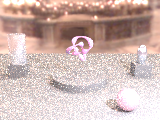 | 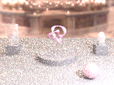 | – | 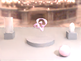 | 0.64628 ±0.00086 n=3 | 0.64134 ±0.0028 n=3 | – | -0.8% | Material swap only (energy-bounded GGX / coated replacement); small effect on the whole image. View-dependent painter replaced by the physical thin film (or its mean colour); the affected objects are small in frame. |
FeatureBased/Geometry/aphrodite.RISEscene | – | 0.19929 ±0.00012 n=3 | 0.19932 ±4.2e-05 n=3 | – | +0.0% | View-dependent painter replaced by the physical thin film (or its mean colour); the affected objects are small in frame. | |||
FeatureBased/Geometry/f16.RISEscene | – | 0.048415 ±6e-05 n=3 | 0.048404 ±6e-05 n=3 | – | -0.0% | View-dependent painter replaced by the physical thin film (or its mean colour); the affected objects are small in frame. | |||
FeatureBased/Geometry/teapot.RISEscene | 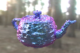 | 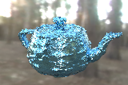 | 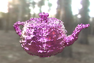 | 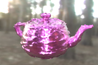 | 0.53478 ±0.00072 n=3 | 0.76616 ±0.013 n=3 | 0.66856 ±0.024 n=3 | +25.0% | The perfect-reflector teapot's iridescent purple/blue reflectance became a physical TiO2-on-titanium film, 125 nm by owner ruling (the hue rule alone gives 55 nm, light blue); a thin film over titanium reflects more than the legacy purple mirror. The polished (ior 10000) floor became a near-mirror GGX (F0 = tau x 0.9996). Retune: OWNER RULING 2026-10-10 APPLIED: film_thickness 125 nm (magenta-purple titanium anodizing; tool FILM_OVERRIDE) keeps the purple look: 0.6686 (+25.0%). No light retune under the B1 precedent: with the film swapped back for a constant mean-colour mirror the scene reads 0.5234 (-2.1%), so the +25% is the film's Fresnel rise toward 1 at grazing incidence, which a constant-colour mirror lacks: physics the legacy painter faked, not a legacy energy bias. |
FeatureBased/Hair/cottontail_dusk.RISEscene | – | – | 0.727 ±0.00029 n=3 | 0.72691 ±0.00075 n=3 | – | -0.0% | Material swap only (energy-bounded GGX / coated replacement); small effect on the whole image. | ||
FeatureBased/MLT/mlt_caustic_chain.RISEscene | 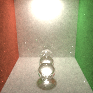 | 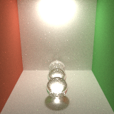 | – | 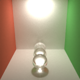 | 0.58794 ±0 n=3 | 0.56964 ±0.00016 n=3 | – | -3.1% | Same transport (BDPT or VCM evaluates the paths MLT sampled); MLT-to-bidirectional difference within noise. |
FeatureBased/MLT/mlt_keyhole.RISEscene | 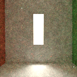 | 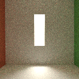 | – | 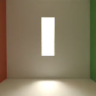 | 0.58621 ±0 n=3 | 0.58897 ±0.00037 n=3 | – | +0.5% | Same transport (BDPT or VCM evaluates the paths MLT sampled); MLT-to-bidirectional difference within noise. |
FeatureBased/MLT/mlt_luminous_orb.RISEscene | 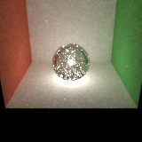 | 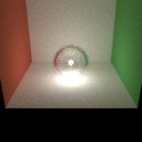 | – | 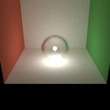 | 0.28753 ±0 n=3 | 0.27803 ±0.00061 n=3 | – | -3.3% | Same transport (BDPT or VCM evaluates the paths MLT sampled); MLT-to-bidirectional difference within noise. |
FeatureBased/MLT/mlt_reflected_caustic.RISEscene | 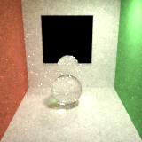 | – | 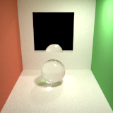 | 0.51511 ±0 n=3 | 0.51482 ±8.9e-05 n=3 | – | -0.1% | Same transport (BDPT or VCM evaluates the paths MLT sampled); MLT-to-bidirectional difference within noise. | |
FeatureBased/MLT/mlt_veach_egg.RISEscene | 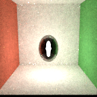 | 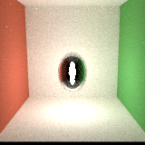 | – | 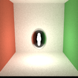 | 0.91115 ±0 n=3 | 0.93735 ±0.00098 n=3 | – | +2.9% | Same transport (BDPT or VCM evaluates the paths MLT sampled); MLT-to-bidirectional difference within noise. |
FeatureBased/Materials/rainwet_cobbles.RISEscene | 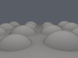 | 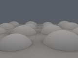 | – | – | 0.18473 ±8e-05 n=3 | 0.18451 ±6.7e-05 n=3 | – | -0.1% | Material swap only (energy-bounded GGX / coated replacement); small effect on the whole image. |
FeatureBased/Materials/rainwet_courtyard_night.RISEscene | 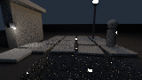 | – | – | 0.23057 ±0.00046 n=3 | 0.23032 ±0.0001 n=3 | – | -0.1% | Material swap only (energy-bounded GGX / coated replacement); small effect on the whole image. | |
FeatureBased/Materials/sheer_curtain.RISEscene | 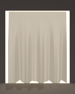 | 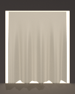 | – | 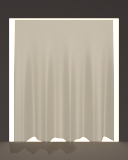 | 0.38788 ±4.2e-05 n=3 | 0.38367 ±2.7e-05 n=3 | – | -1.1% | Ambient term moved to an occluded uniform environment (radiance color x power / pi); small effect: the scene is lit mainly by its other lights. |
FeatureBased/Parser/photon_cloister.RISEscene | 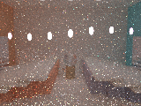 | 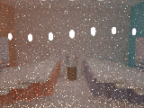 | – | 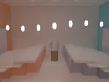 | 0.21885 ±0.00022 n=3 | 0.21865 ±0.00094 n=3 | – | -0.1% | Material swap only (energy-bounded GGX / coated replacement); small effect on the whole image. |
FeatureBased/Parser/pillow.RISEscene | 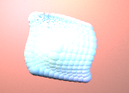 | 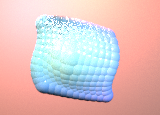 | 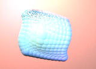 | 0.97172 ±0.0064 n=3 | 0.76429 ±0.0027 n=3 | 0.96957 ±0.0036 n=3 | -0.2% | 123 polished_material chunks -> coated_material over lambertian; same coat-darkening cause as pavilion_colonnade (the whole pillow is coated). Note on coat_weight: polished tau 0.96 0.97 0.94 became coat_weight 0.966, which in coated_material is COVERAGE (96.6% of each point is coated, 3.4% bare substrate), not a tint or a reflection strength; the tau tint has no equivalent and is dropped. Retune: APPLIED: five omni powers x1.273 (two-point linear fit: k=1 0.7643, k=2 1.5239); mean back within 0.2%. | |
FeatureBased/PathTracing/pt_alchemists_sanctum.RISEscene | – | 4.4867 ±0.0096 n=3 | 4.4963 ±0.00087 n=3 | – | +0.2% | Material swap only (energy-bounded GGX / coated replacement); small effect on the whole image. | |||
Benchmarks/dreamscape_coral_queens_hour.RISEscene | – | – | 0.46341 n=1 | 0.46582 n=1 | – | +0.5% | View-dependent painter replaced by the physical thin film (or its mean colour); the affected objects are small in frame. | ||
Benchmarks/dreamscape_coral_queens_hour_v2.RISEscene | – | – | 0.42741 n=1 | 0.43032 n=1 | – | +0.7% | View-dependent painter replaced by the physical thin film (or its mean colour); the affected objects are small in frame. | ||
Benchmarks/dreamscape_covenant_of_the_vale.RISEscene | – | – | 0.21077 n=1 | 0.21134 n=1 | – | +0.3% | View-dependent painter replaced by the physical thin film (or its mean colour); the affected objects are small in frame. | ||
Tests/BDPT/bdpt_alchemists_sanctum.RISEscene | – | – | 4.4963 ±0.0015 n=3 | 4.4965 ±0.0023 n=3 | – | +0.0% | Material swap only (energy-bounded GGX / coated replacement); small effect on the whole image. | ||
Tests/BDPT/bdpt_jewel_vault.RISEscene | – | – | 11.036 ±0.0062 n=3 | 11.029 ±0.0038 n=3 | – | -0.1% | Material swap only (energy-bounded GGX / coated replacement); small effect on the whole image. | ||
Tests/BDPT/cornellbox_bdpt_full.RISEscene | – | – | 0.4385 ±0.00021 n=3 | 0.44625 ±0.00022 n=3 | – | +1.8% | Material swap only (energy-bounded GGX / coated replacement); small effect on the whole image. | ||
Tests/BDPT/cornellbox_bdpt_glossy.RISEscene | – | – | 0.51205 ±0.00027 n=3 | 0.53021 ±0.00015 n=3 | – | +3.5% | Material swap only (energy-bounded GGX / coated replacement); small effect on the whole image. | ||
Tests/BDPT/cornellbox_bdpt_materials.RISEscene | – | – | 0.94443 ±0.0008 n=3 | 0.92262 ±0.00047 n=3 | – | -2.3% | Material swap only (energy-bounded GGX / coated replacement); small effect on the whole image. | ||
Tests/BDPT/cornellbox_bdpt_materials_pt.RISEscene | – | – | 0.94567 ±0.00048 n=3 | 0.9225 ±0.0003 n=3 | – | -2.4% | Material swap only (energy-bounded GGX / coated replacement); small effect on the whole image. | ||
Tests/BDPT/cornellbox_bdpt_thinlens.RISEscene | – | – | 0.36532 ±0.00044 n=3 | 0.31022 ±0.0003 n=3 | – | -15.1% | isotropic_phong white rd + white rs: legacy albedo ~1.25 (white furnace of a Phong 0.5/white/N60 sphere: 1.246); ggx schlick_f0 with F0 1 is a white glossy mirror reflecting the darker box. | ||
Tests/Cameras/fisheye.RISEscene | – | – | 0.2165 ±0.00016 n=3 | 0.18059 ±7.7e-05 n=3 | – | -16.6% | The iridescent mirror became a 150 nm TiO2-on-titanium film (blue at normal incidence); it reflects less than the legacy painter-coloured perfect reflector. | ||
Tests/Cameras/thinlens_tiltshift.RISEscene | – | – | 0.41635 ±8.3e-05 n=3 | 0.415 ±0.00017 n=3 | – | -0.3% | Ambient term moved to an occluded uniform environment (radiance color x power / pi); small effect: the scene is lit mainly by its other lights. | ||
Tests/Geometry/aphrodite_mesh.RISEscene | – | – | 0.1993 ±0.00011 n=3 | 0.19939 ±8.6e-05 n=3 | – | +0.0% | View-dependent painter replaced by the physical thin film (or its mean colour); the affected objects are small in frame. | ||
Tests/Geometry/gltf_box.RISEscene | – | – | 0.093638 ±2.1e-05 n=3 | 0.093658 ±2.4e-06 n=3 | – | +0.0% | Ambient term moved to an occluded uniform environment (radiance color x power / pi); small effect: the scene is lit mainly by its other lights. | ||
Tests/Geometry/gltf_duck.RISEscene | – | – | 0.12889 ±7.3e-05 n=3 | 0.12749 ±2e-05 n=3 | – | -1.1% | Ambient term moved to an occluded uniform environment (radiance color x power / pi); small effect: the scene is lit mainly by its other lights. | ||
Tests/Geometry/gltf_normal_mapped.RISEscene | – | – | 0.020871 ±1.4e-05 n=3 | 0.020815 ±1.2e-05 n=3 | – | -0.3% | Ambient term moved to an occluded uniform environment (radiance color x power / pi); small effect: the scene is lit mainly by its other lights. | ||
Tests/Geometry/object_instancing.RISEscene | – | – | 0.309 ±3.9e-05 n=3 | 0.30796 ±5.1e-05 n=3 | – | -0.3% | Ambient term moved to an occluded uniform environment (radiance color x power / pi); small effect: the scene is lit mainly by its other lights. | ||
Tests/Geometry/object_mirror.RISEscene | – | – | 0.34669 ±2.8e-05 n=3 | 0.34591 ±1.4e-05 n=3 | – | -0.2% | Ambient term moved to an occluded uniform environment (radiance color x power / pi); small effect: the scene is lit mainly by its other lights. | ||
Tests/Geometry/object_parenting.RISEscene | – | – | 0.26011 ±2.4e-05 n=3 | 0.25949 ±1.8e-05 n=3 | – | -0.2% | Ambient term moved to an occluded uniform environment (radiance color x power / pi); small effect: the scene is lit mainly by its other lights. | ||
Tests/Geometry/scenegraph_stress.RISEscene | – | – | 0.14163 ±0.00019 n=3 | 0.1415 ±0.00018 n=3 | – | -0.1% | Ambient term moved to an occluded uniform environment (radiance color x power / pi); small effect: the scene is lit mainly by its other lights. | ||
Tests/Geometry/teapot_analytic.RISEscene | – | 0.52469 ±3.6e-05 n=3 | 0.98557 ±0.011 n=3 | 0.8138 ±0.0058 n=3 | +55.1% | Same material translation as FeatureBased/Geometry/teapot (125 nm thin-film titanium mirror; polished ior 10000 -> near-mirror GGX); the teapot fills more of this frame, so the film's grazing-angle brightening weighs more. Retune: OWNER RULING 2026-10-10 APPLIED (shared material): film_thickness 125 nm as on the showcase teapot: 0.8138 (+55.1%); not light-retuned (test scene, same physical cause). | |||
Tests/Importers/gltf_helmet_light_control.RISEscene | – | – | 0.1779 ±2.5e-06 n=3 | 0.1779 ±4.4e-06 n=3 | – | +0.0% | Ambient term moved to an occluded uniform environment (radiance color x power / pi); small effect: the scene is lit mainly by its other lights. | ||
Tests/Importers/gltf_import_alpha_blend.RISEscene | – | – | 0.33277 ±3.9e-05 n=3 | 0.31989 ±2.6e-05 n=3 | – | -3.9% | Ambient term moved to an occluded uniform environment (radiance color x power / pi); small effect: the scene is lit mainly by its other lights. | ||
Tests/Importers/gltf_import_attenuation.RISEscene | – | – | 0.27304 ±0.0003 n=3 | 0.2654 ±0.00046 n=3 | – | -2.8% | Ambient term moved to an occluded uniform environment (radiance color x power / pi); small effect: the scene is lit mainly by its other lights. | ||
Tests/Importers/gltf_import_avocado.RISEscene | – | – | 0.068258 ±5.2e-06 n=3 | 0.06769 ±5.7e-06 n=3 | – | -0.8% | Ambient term moved to an occluded uniform environment (radiance color x power / pi); small effect: the scene is lit mainly by its other lights. | ||
Tests/Importers/gltf_import_avocado_spectral.RISEscene | – | – | 0.068942 ±0.00035 n=3 | 0.068306 ±0.00024 n=3 | – | -0.9% | Ambient term moved to an occluded uniform environment (radiance color x power / pi); small effect: the scene is lit mainly by its other lights. | ||
Tests/Importers/gltf_import_damaged_helmet.RISEscene | – | – | 0.062791 ±0.003 n=3 | 0.098049 ±0.053 n=3 | – | +56.2% noisy | Firefly-dominated at 16 spp (salt sd 47-54%); the mean is not resolvable. The spectral twin moves +0.7%. | ||
Tests/Importers/gltf_import_damaged_helmet_spectral.RISEscene | – | – | 0.062547 ±0.0063 n=3 | 0.062973 ±0.0019 n=3 | – | +0.7% noisy | Ambient term moved to an occluded uniform environment (radiance color x power / pi); small effect: the scene is lit mainly by its other lights. | ||
Tests/Importers/gltf_import_metalrough_spheres.RISEscene | – | – | 0.083732 ±8.1e-05 n=3 | 0.099672 ±0.029 n=3 | – | +19.0% noisy | One firefly salt: salts 1-2 read 0.0831 / 0.0832 (-0.7%), salt 3 0.133. Not a resolvable change at 64 spp. | ||
Tests/Importers/gltf_import_multi_uv.RISEscene | – | – | 0.086681 ±8.9e-07 n=3 | 0.087962 ±2.5e-06 n=3 | – | +1.5% | Ambient term moved to an occluded uniform environment (radiance color x power / pi); small effect: the scene is lit mainly by its other lights. | ||
Tests/Lights/hosek_wilkie_sky_lab.RISEscene | – | – | 1.2592 ±0.00063 n=3 | 1.2235 ±0.00059 n=3 | – | -2.8% | The ambient fill was DROPPED (--ambient-with-sky drop): the hosek_wilkie_skylight already installs the environment (a radiance_map would have replaced the sky; -97% when tried). | ||
Tests/MLT/cornellbox_mlt.RISEscene | – | – | 0.54503 ±0 n=3 | 0.54374 ±0.00028 n=3 | – | -0.2% | Same transport (BDPT or VCM evaluates the paths MLT sampled); MLT-to-bidirectional difference within noise. | ||
Tests/MLT/cornellbox_mlt_fast.RISEscene | – | – | 0.54504 ±0 n=3 | 0.54396 ±9.4e-05 n=3 | – | -0.2% | Same transport (BDPT or VCM evaluates the paths MLT sampled); MLT-to-bidirectional difference within noise. | ||
Tests/MLT/mlt_deep_fog.RISEscene |  |  | – | – | 1.8063e-20 ±0 n=3 | 4.1749e-18 ±4e-18 n=3 | – | +23013.6% noisy | Both images are black at the review resolution (means ~1e-18): the fog scene needs its shipped resolution; not comparable here. |
Tests/MLT/mlt_deep_fog_spectral.RISEscene |  | – | – | 4.4712e-20 ±0 n=3 | 9.1447e-18 ±1.3e-17 n=3 | – | +20352.5% noisy | Both images are black at the review resolution (means ~1e-18): the fog scene needs its shipped resolution; not comparable here. | |
Tests/MLT/mlt_torus_chain_atrium.RISEscene | – | – | 1.279 ±0 n=3 | 1.2805 ±0.0014 n=3 | – | +0.1% | Same transport (BDPT or VCM evaluates the paths MLT sampled); MLT-to-bidirectional difference within noise. | ||
Tests/Materials/anisotropic_uv_tangent.RISEscene | – | – | 0.0016568 ±3.8e-07 n=3 | 0.0015613 ±1.1e-06 n=3 | – | -5.8% | Ambient term moved to an occluded uniform environment (radiance color x power / pi); small effect: the scene is lit mainly by its other lights. | ||
Tests/Materials/coated_material.RISEscene | – | – | 0.3559 ±3.7e-05 n=3 | 0.36402 ±3.6e-05 n=3 | – | +2.3% | Ambient term moved to an occluded uniform environment (radiance color x power / pi); small effect: the scene is lit mainly by its other lights. | ||
Tests/Materials/composite_material.RISEscene | – | – | 1.005 ±0.00024 n=3 | 1.0017 ±0.00035 n=3 | – | -0.3% | Ambient term moved to an occluded uniform environment (radiance color x power / pi); small effect: the scene is lit mainly by its other lights. | ||
Tests/Materials/fabric_presets.RISEscene | – | – | 0.048996 ±3e-05 n=3 | 0.049171 ±3.4e-05 n=3 | – | +0.4% | Ambient term moved to an occluded uniform environment (radiance color x power / pi); small effect: the scene is lit mainly by its other lights. | ||
Tests/Materials/materials.RISEscene | – | – | 0.14038 ±0.00023 n=3 | 0.19234 ±0.0019 n=3 | – | +37.0% | Every legacy material here has rs white, which becomes F0 = 1 (a coloured-diffuse body under a full-strength specular) per the 11.5 table; GGX couples the diffuse by (1-A(i))(1-A(o)), so the bodies turn into tinted mirrors. All five materials had PER-CHANNEL roughness, which ggx_material cannot carry under RGB (it reads only the first channel); migrated with --collapse-per-channel: each alpha is its Rec.709-luminance-weighted mean, noted in the scene. The rainbow per-channel highlights are therefore gone. | ||
Tests/Materials/pbr_metallic_roughness.RISEscene | – | – | 0.01381 ±9.7e-05 n=3 | 0.01386 ±2.4e-05 n=3 | – | +0.4% | Ambient term moved to an occluded uniform environment (radiance color x power / pi); small effect: the scene is lit mainly by its other lights. | ||
Tests/Materials/pbr_specular_anisotropy.RISEscene | – | – | 0.015015 ±1.4e-05 n=3 | 0.014914 ±5.8e-06 n=3 | – | -0.7% | Ambient term moved to an occluded uniform environment (radiance color x power / pi); small effect: the scene is lit mainly by its other lights. | ||
Tests/Materials/sheen.RISEscene | – | – | 0.0069022 ±1.3e-05 n=3 | 0.0072081 ±1.2e-05 n=3 | – | +4.4% | Ambient term moved to an occluded uniform environment (radiance color x power / pi); small effect: the scene is lit mainly by its other lights. | ||
Tests/Materials/spectral_gold_sphere.RISEscene | – | – | 0.23631 ±0.00062 n=3 | 0.2362 ±0.001 n=3 | – | -0.0% | Ambient term moved to an occluded uniform environment (radiance color x power / pi); small effect: the scene is lit mainly by its other lights. | ||
Tests/Materials/transmission.RISEscene | – | – | 0.47665 ±0.00014 n=3 | 0.46586 ±0.00028 n=3 | – | -2.3% | Ambient term moved to an occluded uniform environment (radiance color x power / pi); small effect: the scene is lit mainly by its other lights. | ||
Tests/Materials/unlit.RISEscene | – | – | 0.022924 ±1e-06 n=3 | 0.022916 ±1e-05 n=3 | – | -0.0% | Ambient term moved to an occluded uniform environment (radiance color x power / pi); small effect: the scene is lit mainly by its other lights. | ||
Tests/Materials/weave_presets.RISEscene | – | – | 0.023717 ±2.9e-05 n=3 | 0.023448 ±3.9e-06 n=3 | – | -1.1% | Ambient term moved to an occluded uniform environment (radiance color x power / pi); small effect: the scene is lit mainly by its other lights. | ||
Tests/Materials/wetness_prelude_validation.RISEscene | – | – | 0.12021 ±3.9e-05 n=3 | 0.10628 ±3.4e-05 n=3 | – | -11.6% | The Phase-1 wetness recipe (polished_material with painter-driven tau / gloss) became coated_material (coat_weight = the wet painter, coat_roughness = 1/sqrt(2n+1) of the gloss expression, rewritten in place). The layered model darkens wet substrate by internal reflection; the recipe's own pow(base, k) albedo darkening stays, so wet areas now darken twice (WETNESS_COAT_DESIGN: coated replaces that RGB fit). Owner ruling 2026-10-10: accepted as is (-11.6%). | ||
Tests/Painters/displaced_plus_relief_shared_field.RISEscene | – | – | 0.18892 ±6e-06 n=3 | 0.18855 ±1.1e-05 n=3 | – | -0.2% | Ambient term moved to an occluded uniform environment (radiance color x power / pi); small effect: the scene is lit mainly by its other lights. | ||
Tests/Painters/expression_painter_marble.RISEscene | – | – | 0.10415 ±2.4e-05 n=3 | 0.10417 ±2e-05 n=3 | – | +0.0% | Ambient term moved to an occluded uniform environment (radiance color x power / pi); small effect: the scene is lit mainly by its other lights. | ||
Tests/Painters/fractal.RISEscene | – | – | 0.15095 ±2.1e-05 n=3 | 0.15103 ±0.00021 n=3 | – | +0.0% | Ambient term moved to an occluded uniform environment (radiance color x power / pi); small effect: the scene is lit mainly by its other lights. | ||
Tests/Painters/mapping_triplanar.RISEscene | – | – | 0.22321 ±3.1e-05 n=3 | 0.21743 ±6.3e-05 n=3 | – | -2.6% | Ambient term moved to an occluded uniform environment (radiance color x power / pi); small effect: the scene is lit mainly by its other lights. | ||
Tests/Painters/painters.RISEscene | – | – | 0.13616 ±2.9e-05 n=3 | 0.13226 ±4e-05 n=3 | – | -2.9% | View-dependent painter replaced by the physical thin film (or its mean colour); the affected objects are small in frame. | ||
Tests/Painters/ramp_painter_terrain.RISEscene | – | – | 0.25904 ±3.7e-05 n=3 | 0.2482 ±2.3e-05 n=3 | – | -4.2% | Ambient term moved to an occluded uniform environment (radiance color x power / pi); small effect: the scene is lit mainly by its other lights. | ||
Tests/Painters/relief_crackle_glaze.RISEscene | – | – | 0.083202 ±2.7e-05 n=3 | 0.083263 ±5.4e-05 n=3 | – | +0.1% | Ambient term moved to an occluded uniform environment (radiance color x power / pi); small effect: the scene is lit mainly by its other lights. | ||
Tests/Painters/relief_sphere_no_uv.RISEscene | – | – | 0.17624 ±3.1e-06 n=3 | 0.17618 ±1.1e-05 n=3 | – | -0.0% | Ambient term moved to an occluded uniform environment (radiance color x power / pi); small effect: the scene is lit mainly by its other lights. | ||
Tests/Painters/scalar_painter_expression_roughness.RISEscene | – | – | 0.21243 ±5.6e-06 n=3 | 0.21187 ±2.1e-05 n=3 | – | -0.3% | Ambient term moved to an occluded uniform environment (radiance color x power / pi); small effect: the scene is lit mainly by its other lights. | ||
Tests/Painters/stochastic_scatter.RISEscene | – | – | 0.019518 ±1.1e-05 n=3 | 0.019443 ±7.6e-05 n=3 | – | -0.4% | Ambient term moved to an occluded uniform environment (radiance color x power / pi); small effect: the scene is lit mainly by its other lights. | ||
Tests/PixelFilters/catmull-rom.RISEscene | – | – | 0.61014 ±8.7e-05 n=3 | 0.69994 ±0.00017 n=3 | – | +14.7% | Ambient power 3.14 -> uniform radiance 1.0. The ambient light gave each surface only f(n, n), which is tiny for the mirror / glossy spheres; the environment shows up in their reflections (and in the coloured sphere's gloss). | ||
Tests/PixelFilters/gaussian.RISEscene | – | – | 0.60964 ±0.00019 n=3 | 0.6994 ±0.00011 n=3 | – | +14.7% | Ambient power 3.14 -> uniform radiance 1.0. The ambient light gave each surface only f(n, n), which is tiny for the mirror / glossy spheres; the environment shows up in their reflections (and in the coloured sphere's gloss). | ||
Tests/PixelFilters/lanczos.RISEscene | – | – | 0.61013 ±4.4e-05 n=3 | 0.69991 ±1.3e-05 n=3 | – | +14.7% | Ambient power 3.14 -> uniform radiance 1.0. The ambient light gave each surface only f(n, n), which is tiny for the mirror / glossy spheres; the environment shows up in their reflections (and in the coloured sphere's gloss). | ||
Tests/PixelFilters/mitchell-netravali.RISEscene | – | – | 0.61026 ±0.00014 n=3 | 0.69987 ±7.3e-05 n=3 | – | +14.7% | Ambient power 3.14 -> uniform radiance 1.0. The ambient light gave each surface only f(n, n), which is tiny for the mirror / glossy spheres; the environment shows up in their reflections (and in the coloured sphere's gloss). | ||
Tests/PixelFilters/tent.RISEscene | – | – | 0.61006 ±0.00019 n=3 | 0.69968 ±0.00022 n=3 | – | +14.7% | Ambient power 3.14 -> uniform radiance 1.0. The ambient light gave each surface only f(n, n), which is tiny for the mirror / glossy spheres; the environment shows up in their reflections (and in the coloured sphere's gloss). | ||
Tests/SDF/sdf_shadows.RISEscene | – | – | 0.32642 ±3e-05 n=3 | 0.32523 ±1.1e-05 n=3 | – | -0.4% | Ambient term moved to an occluded uniform environment (radiance color x power / pi); small effect: the scene is lit mainly by its other lights. | ||
Tests/Samplers/cornell_mlt.RISEscene | – | – | 0.4936 ±0 n=3 | 0.49648 ±0.00029 n=3 | – | +0.6% | Same transport (BDPT or VCM evaluates the paths MLT sampled); MLT-to-bidirectional difference within noise. | ||
Tests/Shaders/blurry_floor.RISEscene | – | – | 0.40673 ±1.8e-05 n=3 | 0.085421 ±6.9e-05 n=3 | – | -79.0% | polished_material with ior 10000: the legacy model renormalises its white substrate by the coat's mean transmittance, so the floor showed its FULL white albedo plus a ~100% mirror coat (reflecting ~2x). The replacement is a pure near-mirror (ggx schlick_f0, F0 0.9996, alpha 0.022): the floor now shows only the blurry reflections that are this scene's subject. | ||
Tests/Signals/proximity_closed_forms.RISEscene | – | – | 0.10922 ±1e-05 n=3 | 0.10894 ±2.4e-05 n=3 | – | -0.3% | Ambient term moved to an occluded uniform environment (radiance color x power / pi); small effect: the scene is lit mainly by its other lights. | ||
Tests/Signals/proximity_mesh_contact.RISEscene | – | – | 0.29525 ±4.5e-05 n=3 | 0.29037 ±9.4e-06 n=3 | – | -1.7% | Ambient term moved to an occluded uniform environment (radiance color x power / pi); small effect: the scene is lit mainly by its other lights. | ||
Tests/Spectral/chromaticity_test_rgb.RISEscene | – | – | 0.0069691 ±1.4e-06 n=3 | 0.0065998 ±7.9e-06 n=3 | – | -5.3% | Ambient term moved to an occluded uniform environment (radiance color x power / pi); small effect: the scene is lit mainly by its other lights. | ||
Tests/Spectral/chromaticity_test_spectral.RISEscene | – | – | 0.0070492 ±4.1e-05 n=3 | 0.0066538 ±5.2e-05 n=3 | – | -5.6% | Ambient term moved to an occluded uniform environment (radiance color x power / pi); small effect: the scene is lit mainly by its other lights. | ||
Tests/Spectral/hwss_mlt_spectral_cornellbox.RISEscene | – | – | 3.7138 ±0 n=3 | 3.6933 ±4.5e-05 n=3 | – | -0.6% | Same transport (BDPT or VCM evaluates the paths MLT sampled); MLT-to-bidirectional difference within noise. | ||
Tests/Spectral/perf_avocado_rgb.RISEscene | – | – | 0.068748 ±1e-05 n=3 | 0.068175 ±7.9e-06 n=3 | – | -0.8% | Ambient term moved to an occluded uniform environment (radiance color x power / pi); small effect: the scene is lit mainly by its other lights. | ||
Tests/Spectral/perf_avocado_spectral.RISEscene | – | – | 0.068723 ±0.00036 n=3 | 0.068301 ±0.00061 n=3 | – | -0.6% | Ambient term moved to an occluded uniform environment (radiance color x power / pi); small effect: the scene is lit mainly by its other lights. | ||
Tests/Spectral/uniform_green_spectral.RISEscene | – | – | 0.35077 ±0.00061 n=3 | 0.35062 ±0.00079 n=3 | – | -0.0% | Ambient term moved to an occluded uniform environment (radiance color x power / pi); small effect: the scene is lit mainly by its other lights. | ||
Tests/SubsurfaceScattering/caustic_sss.RISEscene | – | 0.003844 ±4.2e-06 n=3 | 0.030812 ±0.00022 n=3 | 0.0038623 ±2.8e-05 n=3 | +0.5% | VCM renders no ambient_light (slice B1 dropped it, measured at 1.2% of the legacy image, and retuned the spot to the legacy mean) but does render a radiance_map, and a uniform environment lights the SSS block from every direction: x8 the image. Retune: APPLIED: radiance_scale x0.00171 so the environment adds the 1.2% the ambient light added; mean within 0.5%. Kept (not dropped) with a scene comment so the ambient conversion stays uniform across the corpus; it is effectively zero by design. | |||
Tests/SubsurfaceScattering/sss_different_bsdf.RISEscene | – | – | 0.09477 ±0.00028 n=3 | 0.095059 ±0.00024 n=3 | – | +0.3% | Material swap only (energy-bounded GGX / coated replacement); small effect on the whole image. | ||
Tests/UnifiedLighting/envmap_nee_test_pt.RISEscene | – | – | 0.44783 ±0.0061 n=3 | 0.43535 ±0.0051 n=3 | – | -2.8% | Material swap only (energy-bounded GGX / coated replacement); small effect on the whole image. |